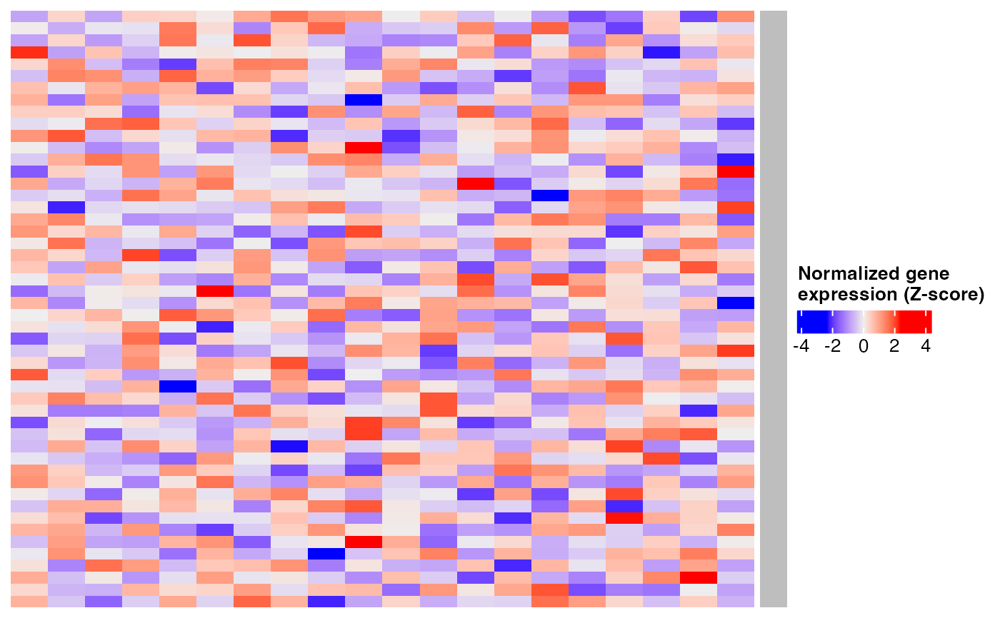

Generates a heatmap using the ComplexHeatmap package with a single-color row annotation. Designed to stack several heatmaps (for example, one per cell type) with consistent formatting.
Uso
create_heatmap(
mat,
color,
split,
common_names = rownames(mat),
use_raster_flag = FALSE
)Argumentos
- mat
A numeric matrix representing the heatmap values (e.g., Z-scores).
- color
A character string specifying the annotation color (e.g.,
"black","gold1").- split
A factor, character vector or data frame used to split the columns of the heatmap.
NULLfor no split.- common_names
A character vector of row names, used to size the annotation. By default, the row names of
mat.- use_raster_flag
Logical. If
TRUE, rasterization is enabled for faster rendering of large matrices (requires the magick package and a working Cairo/X11 installation). DefaultFALSE.
Ejemplos
if (requireNamespace("ComplexHeatmap", quietly = TRUE)) {
mat <- zscore_mat[1:50, 1:20]
ht <- create_heatmap(mat, color = "black", split = NULL)
ComplexHeatmap::draw(ht)
}
